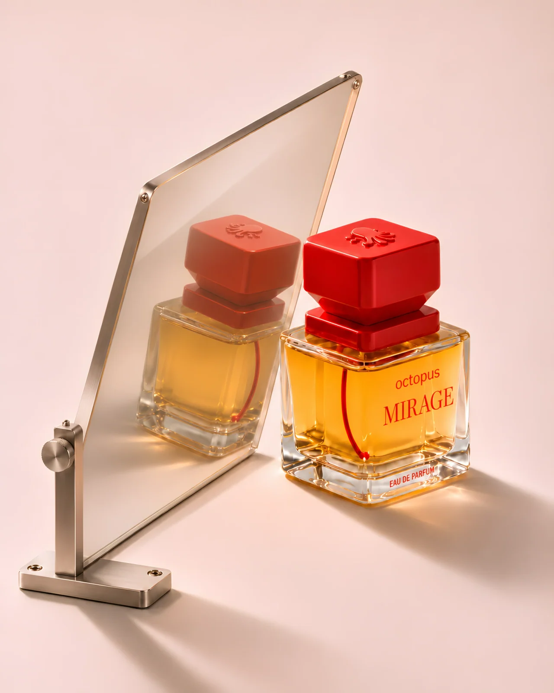
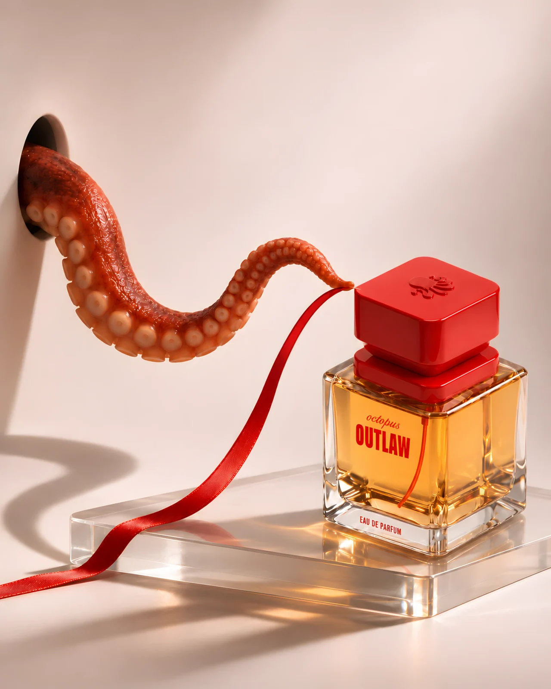
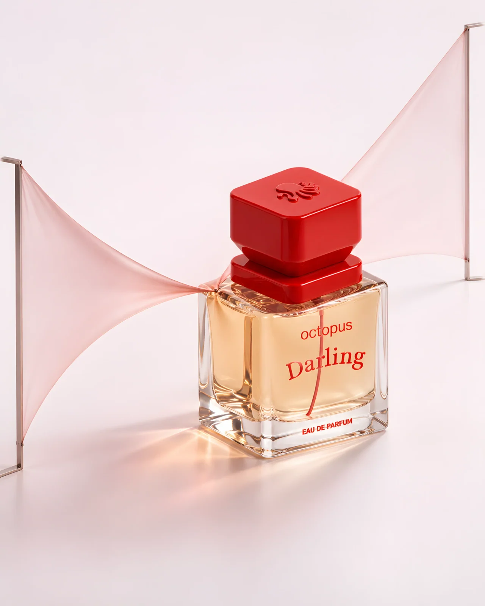
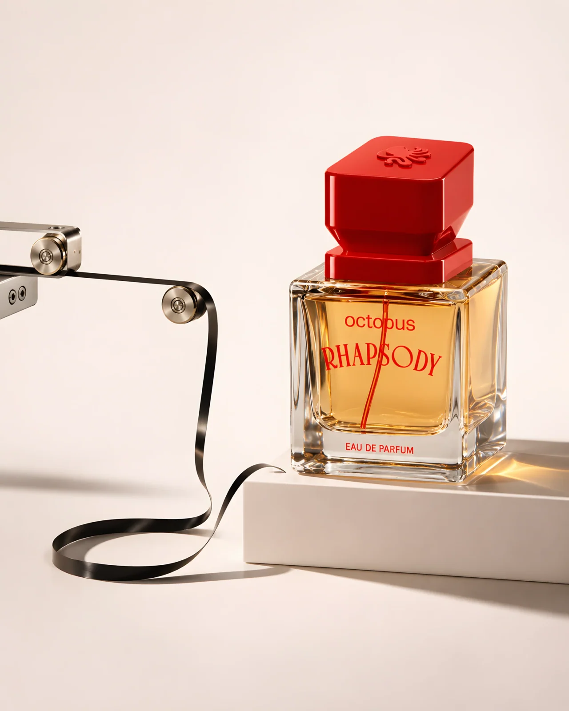

OCTOPUS / BEAUTIFULLY UNREASONABLE
Four acts of attraction around the same Flaming Red bottle.

The idea
The perfume remains composed as its surroundings give way. A mirror image leans toward Mirage, one octopus arm reaches for Outlaw, a blush film touches Darling, and a tape mechanism loses its rhythm beside Rhapsody. Each scene turns temptation into a different physical event.
Making the world
The cuboid bottle, oversized red closure, red dip tube and variant names draw on official product references. The mirror, tentacle, film and tape were digitally staged as AI-assisted concepts, not photographed installations. The 4K-class files were enhanced from smaller generations; fine package detail and exact set mechanics need brand and production review before commercial use.
The series


